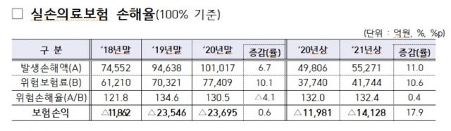

실손보험 가입자 2%가 1000만원 이상 수령…60%는 0원
[헤럴드경제=정경수 기자] 지난해 실손의료보험(실손보험) 가입자 중 2.2%가 1000만원 이상의 보험금을 받아간 것으로 나타났다. 반면 한 차례도 이용하지 않은 고객은 60%를 차지했다.
9일 보험업계에 따르면지난해 실손보험 가입자 3496만명 가운데 1000만원이 넘는 고액 수령자는 76만명으로 전체 가입자의 2.2%로 집계됐다. 보험금 지급액이 5000만원을 초과하는 가입자도 9만명에 달했다
.보험금을 한 번이라도 받은 가입자는 1313만명으로 전체의 37.6%에 해당한다. 이들이 받은 보험료는 전체의 58.4%를 차지했다.
연간 단위로 가입자의 60% 내외는 실손보험을 한 차례도 이용하지 않는 것으로 파악됐다.
지난해 노후·유병자 실손을 포함한 개인 실손보험의 보험 손익(보험료수입-보험금-사업비)은 금융감독원 발표 기준으로 2조5000억원 적자(손실)였다.
가입자의 실손보험 활용 비율이낮은데도 적자 늪에서 벗어나지 못한 것은 소수의 과도한 의료 이용 탓이란 게 보험업계의 판단이다. 특히 다초점 백내장 수술, 도수치료, 비타민·영양주사 같은 건강보험 미적용 진료, 즉 비급여
진료를 대규모 적자의 주원인으로 보험업계는 지목한다. 보험업계는 큰 손실을 이유로 올해1세대(2009년 이전 판매) 구실손보험의 보험료를 6.8∼21.2%, 2세대 표준화실손보험(2009년∼2017년 판매) 보험료를 6.8∼21.2% 각각 올렸으나 적자는 되레 커지는 양상이
다.올해 6월 말 기준 손해보험업계의 실손보험 보험 손익은 1조4128억원 적자로 연말까지 적자 규모가 3조원에 이를 것으로 전망된다.
실손보험 계약에서 손해보험의 점유율(82%)을 고려하면 올해 전체 실손보험 적자는 3조원을 훌쩍 넘길 것이 유력하다.
소수 가입자의 진료비를 대기 위해 전체 가입자가 보험료의 부담은 갈수록 무거워지는 셈이다.
의료 이용량이 많으면 보험료를 할증하는 4세대 실손보험이 7월 출시됐으나 3500만명에 이르는 기존 가입자에게는 보험료 할증이 적용되지 않는다. 실손보험을 거의 활용하지 않는 가입자도 보험료 부담을 나눠서 지게 된다.
보험업계는 기업설명회(IR) 등을 통해 대규모 적자를 고려할 때 내년에도 올해 이상으로 실손 보험료를 대폭 인상이 불가피하다는 방침을 여러 차례 밝혔다. 그러나 하반기 치솟는 물가와 내년도 대선 일정 등을 고려하면 금융당국이 보험업계의
요구를 그대로 수용하지는 않을 것이란 전망에 무게가 실린다. 정경수 kwater@heraldcorp.com